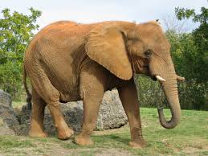
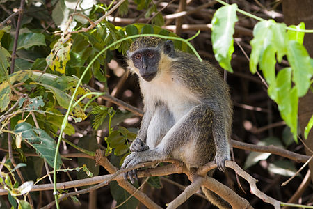
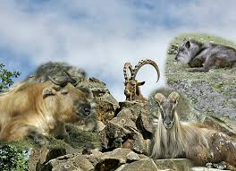
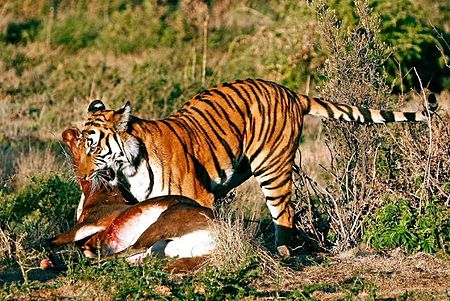
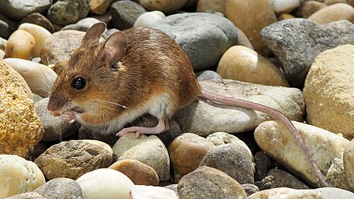
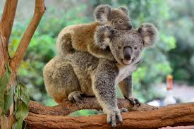

Elefanten

Die Elefanten sind eine Familie aus der Ordnung der Rüsseltiere. Die Familie stellt die
größten gegenwärtig lebenden Landtiere und schließt außerdem die einzigen heute noch lebenden
Vertreter
der Ordnungsgruppe ein. Es werden drei rezente Arten unterschieden: der Afrikanische Elefant, der
Waldelefant und der Asiatische Elefant.
Affen

Die Affen sind eine zu den Trockennasenprimaten gehörende Verwandtschaftsgruppe der Primaten.
Traditionell wurden sie den „Halbaffen“ gegenübergestellt, jedoch sind sie mit den Koboldmakis näher
verwandt als mit den übrigen Vertretern dieser Gruppe. Sie teilen sich in die Neuweltaffen und die
Altweltaffen auf, zu denen auch der Mensch gehört.
Huftiere

Huftiere ist die zusammenfassende Bezeichnung für mehrere Gruppen der Säugetiere,
insbesondere der Paarhufer und der Unpaarhufer. Die Unterscheidung dieser beiden Hauptgruppen ist
schon
alt: Bei Unpaarhufern trägt die Mittelzehe allein das Körpergewicht, bei Paarhufern übernehmen
dritte
und vierte Zehe diese Funktion.
Raubtiere

Die Raubtiere sind eine Ordnung der Säugetiere , zu der die Hundeartigen und die Katzenartigen
gehören.
Als Prädatoren, die sich überwiegend von Wirbeltieren ernähren, sind die Raubtiere mit 16 rezenten
Familien und etwa 270 Arten in 110 Gattungen nahezu weltweit verbreitet.
Nagetiere

Die Nagetiere sind eine Ordnung der Säugetiere. Mit etwa 2500 bis 2600 Arten
stellen sie rund 40 % aller Säugetierspezies und sind somit die bei weitem artenreichste Ordnung
dieser
Gruppe. Zugleich sind sie die Gruppe mit den meisten Neubeschreibungen innerhalb der Säugetiere;
zwischen 2000 und 2017 wurde mindestens 248 Arten innerhalb der Ordnung neu beschrieben oder neu
etabliert.
Beuteltiere

Die Beuteltiere oder Beutelsäuger bilden eine
Unterklasse innerhalb der Säugetiere. Sie unterscheiden sich von den Höheren Säugetieren oder
Plazentatieren unter anderem darin, dass die Jungtiere in einem sehr frühen, embryoartigen
Stadium geboren werden und anschließend oft als passive Traglinge in einem Beutel der Mutter
heranwachsen.